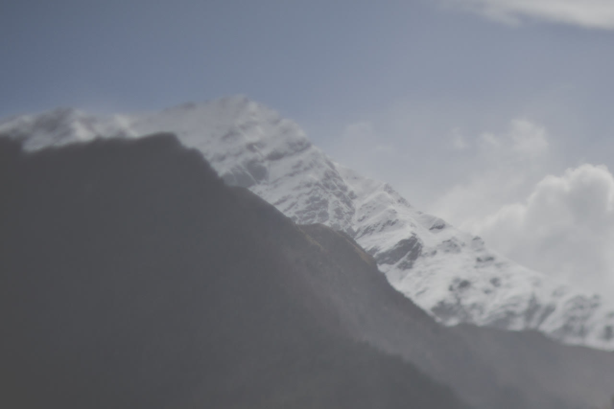

A landscape for each feeling in the deck. Drag and scroll to move through it, and watch the shape change as you go. It isn’t a map of where a feeling should go. It’s an invitation to see what a feeling looks like when it’s given form, and to stay inside that shape for a while.
An aerial view drifting slowly over treetops half-hidden in fog, with the sun low and bright behind the mist. Dark crowns of trees rise out of the white haze and sink back into it as the view moves forward. Footage by Joey Bania.
How the shapes are made
Each landscape is built from nine qualities I observed in one feeling. Six shape the form: intensity, texture, the depth of its past, the uncertainty of its future, permeability, and how much water it holds. Three shape its movement: how fast, how brightly and how steadily it fires. These are observations and interpretations, not measurements.

A snow-covered mountain peak, softly out of focus, rises behind a darker ridge in the foreground. The snow is bright and broken by grey rock, under a pale, cool blue sky with white cloud gathering at the right.
A dense cushion of tiny pale flowers grows out of a crack between angular grey rocks, against a pale sky. The stone is weathered and creased, and the flowers spill over its edge. Footage by Joey Bania.
Looking down from high above, a field of white and lavender-grey cloud stretches to a flat horizon. The cloud tops pile in soft, rounded heaps with shadowed hollows between them, beneath a clear, pale blue sky.
Other Bodies is a creative health practice, not therapy. Nothing here is a treatment, an assessment, or clinical advice. If you are in distress, please reach someone who can help now: in British Columbia, 310-6789 (no area code); anywhere in Canada, call or text 9-8-8.